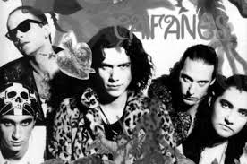
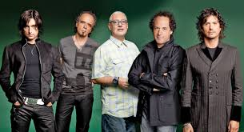
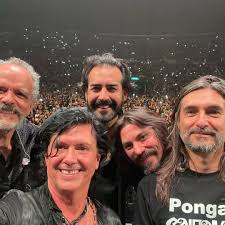
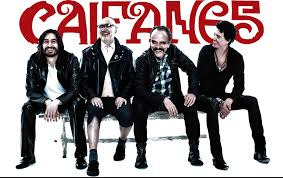
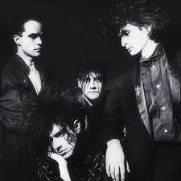
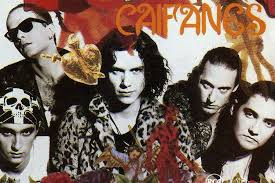
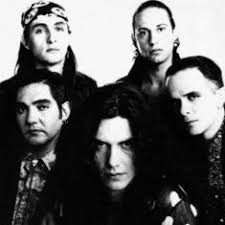

|  |  | |||
|  |  |  |  |  |
| TÍTULO | LETRA |
| Nubes |
Parecemos nubes Que se las lleva el viento Cuando hay huracanes Cuando hay mal de amores Parecemos presos Y como presos pensamos Escapar uno del otro Y cometer la fuga Vamos a dar una vuelta al cielo Para ver lo que es eterno Vamos a dar una vuelta al cielo Para ver lo que es eterno Pensarás que soy un perro Que en el cerebro tengo moquillo Que ladro y que no muerdo Y que soy un mal agradecido Tengo garras tengo dientes Y defiendo lo que tengo Ay amor ya no me tientes Porque muerdo y ya no suelto Vamos dar una vuelta al cielo para ver lo que es eterno Vamos dar una vuelta al cielo para ver lo que es eterno Vamos a dar una vuelta al cielo Para ver lo que es eterno Y luego vienes a buscarme Vamos a dar |
| Afuera |
Muchos años, uno cree Que el caer es levantarse Y, de repente Ya no te paras Que el amor es temporal Que todo te puede pasar Y, de repente Estás muy solo Afuera Afuera tú no existes, solo adentro Afuera Afuera no te cuido, solo adentro Afuera Te desbarata el viento sin dudarlo Afuera Nadie es nada, solo adentro Siguen los años y uno está Creyendo que puede rezar Y, de repente Ya te perdiste Y uno cree que puede creer Y tener todo el poder Y, de repente No tienes nada Afuera Afuera tú no existes, solo adentro Afuera Afuera no te cuido, solo adentro Afuera Te desbarata el viento sin dudarlo Afuera Nadie es nada, solo adentro Afuera Afuera tú no existes, solo adentro Afuera Afuera no te cuido, solo adentro Afuera Te desbarata el viento sin dudarlo Afuera Nadie es nada, solo adentro |
| Viento |
Préstame tu peine Y péiname el alma Desenrédame Fuera de este mundo Dime que no estoy Soñándote Enséñame De que estamos hechos Que quiero brincar planetas Hasta ver uno vacío Que quiero irme a vivir Pero que sea contigo Viento, amárranos Tiempo, detente muchos años Viento, amárranos Tiempo, detente muchos años Préstame tu peine Y péiname el alma Purifícame No me abandones Préstame tu sueño Y duérmeme Embrújame Volvámonos eternos Que quiero brincar planetas Hasta ver uno vacío Que quiero irme a vivir Pero que sea contigo Viento, amárranos Tiempo, detente muchos años Viento, amárranos Tiempo, detente muchos años Viento, amárranos Tiempo, detente muchos años |
| Mátenme porque me muero |
¡Au! ¡Au! Cuando me muera y me tengan que enterrar Quiero que sea con una de tus fotografías Para que no me dé miedo estar abajo Para que no se me olvide como es tu cara Para imaginar que estoy contigo Y sentirme un poquito vivo Mátenme, porque me muero Mátenme, porque no puedo Mátenme, porque me muero Mátenme, porque no puedo Esta enfermedad es incurable Esta enfermedad, ni con un Valium ¡No! ¡Au! Cuando me muera y me tengan que enterrar Quiero que sea con dulces y no con piedras Por si alguna vez me buscas Estaré eternamente lejos Como para darte solo flores Te guardaré mil estrellas Mátenme, porque me muero Mátenme, porque no puedo Mátenme, porque me muero Mátenme, porque me muero |
| La célula que explota |
Hay veces que no tengo ganas de verte Hay veces que no quiero ni tocarte Hay veces que quisiera ahogarte en un grito Y olvidarme de esa imagen tuya Pero no me atrevo Hay veces que no dejo de soñarte De acariciarte hasta que ya no pueda Hay veces que quisiera morir contigo Y olvidarme de toda materia Pero no me atrevo Hay veces que no sé lo que me pasa Ya no puedo saber qué es lo que pasa adentro Somos como gatos en celo Somos una célula que explota Y esa no la paras, no No la paras, no, no, no Ooh |